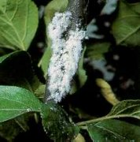

Vértetű
Eriosoma lanigerum
Az almát károsító gubacstatűfaj. Fehér vattaszerű
viaszszálakkal bevont, vörösbarna testnedvű, telepesen élő rovar. Szárnyatlan
alakja telel át a növény föld feletti és föld alatti (gyökér) részein egyaránt.
Tavasszal a vértetvek a fák koronaszintjébe húzódnak, és főképpen a
hajtásvégeken képeznek kolóniát.
Évente 6-10 nemzedéke is fejlődhet. A rovarok szívogatásukkal a fás részek
burjánzását, rákos megbetegedését idézik elő. A sebhelyeken szívásukkal
megakadályozzák a sebek behegedését. Az így létrejött deformált, daganatos
tüneteket vértetüráknak nevezzük.
A kártevő féken tartására Magyarországon is hosszú időn keresztül bevált a
vértetűfürkész (Aphelinus mali) elterjesztése. Napjainkban intenzív peszticid
felhasználása mellett e "természetes korlátozó tényező" veszített
jelentőségéből.
Védekezés:
- Tél végi lemosó permetezés (Novenda vagy Gyümölcsfaolaj).
- A kolóniák permetezése.
Javasolt permetezőszerek:
 Bi 58 EC
Bi 58 EC
 Sinoratox 40 EC
Sinoratox 40 EC
 Flibol E
Flibol E
 Wofatox Sp 30
Wofatox Sp 30
 Metil-Cotnion 25 WP
Metil-Cotnion 25 WP
 Dimecron 50
Dimecron 50
 Ultracid 40 WP
Ultracid 40 WP
 Ekalux 25 EC
Ekalux 25 EC